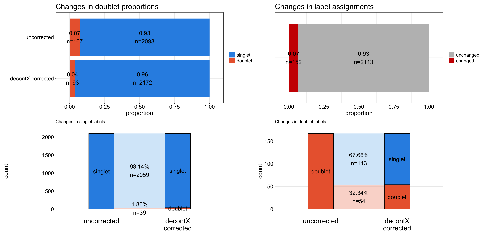
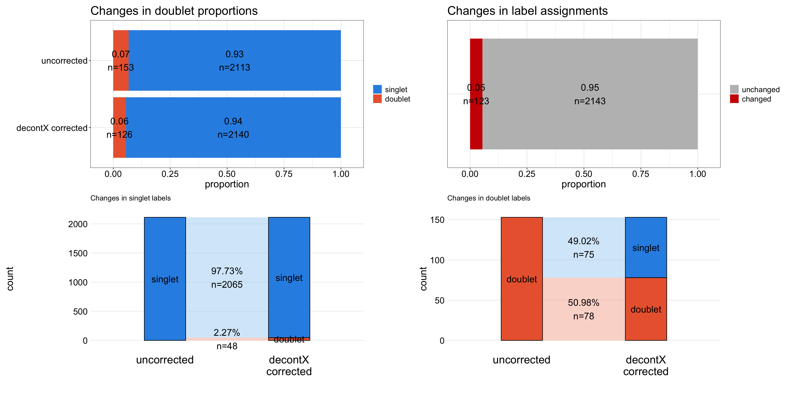
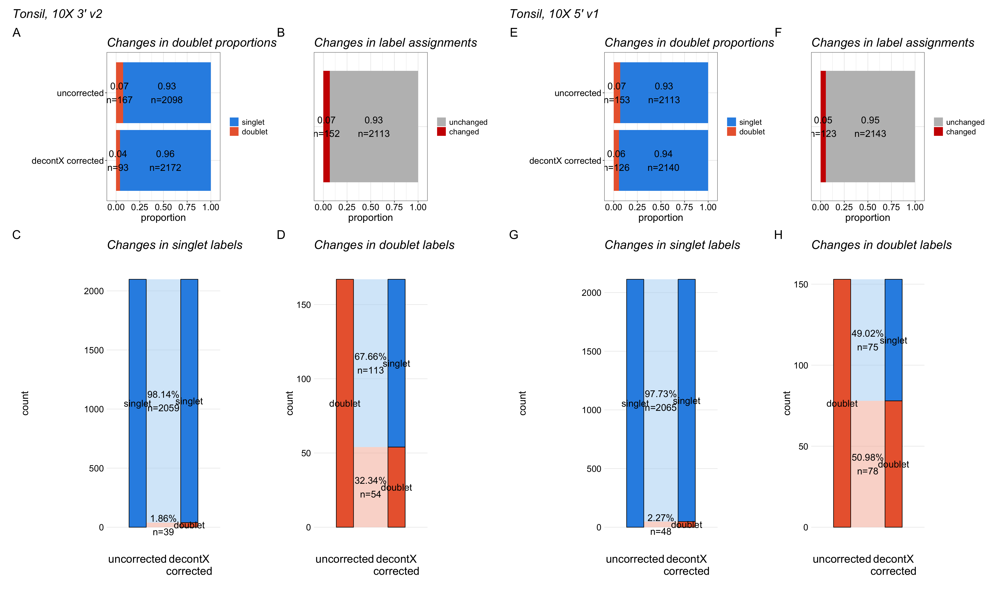
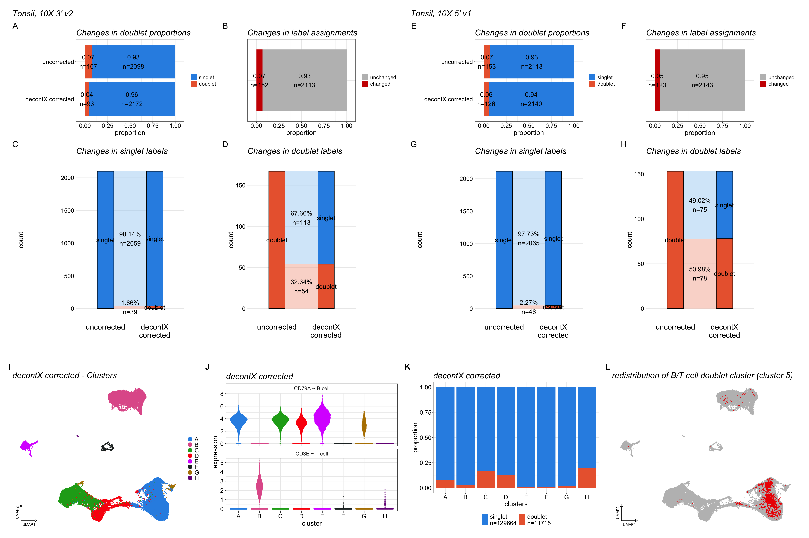

Last updated: 2026-10-07
Checks: 7 0
Knit directory:
ambient_doublet_singlecell/
This reproducible R Markdown analysis was created with workflowr (version 1.7.1). The Checks tab describes the reproducibility checks that were applied when the results were created. The Past versions tab lists the development history.
Great! Since the R Markdown file has been committed to the Git repository, you know the exact version of the code that produced these results.
Great job! The global environment was empty. Objects defined in the global environment can affect the analysis in your R Markdown file in unknown ways. For reproduciblity it’s best to always run the code in an empty environment.
The command set.seed(20260605) was run prior to running
the code in the R Markdown file. Setting a seed ensures that any results
that rely on randomness, e.g. subsampling or permutations, are
reproducible.
Great job! Recording the operating system, R version, and package versions is critical for reproducibility.
Nice! There were no cached chunks for this analysis, so you can be confident that you successfully produced the results during this run.
Great job! Using relative paths to the files within your workflowr project makes it easier to run your code on other machines.
Great! You are using Git for version control. Tracking code development and connecting the code version to the results is critical for reproducibility.
The results in this page were generated with repository version 2cf33d0. See the Past versions tab to see a history of the changes made to the R Markdown and HTML files.
Note that you need to be careful to ensure that all relevant files for
the analysis have been committed to Git prior to generating the results
(you can use wflow_publish or
wflow_git_commit). workflowr only checks the R Markdown
file, but you know if there are other scripts or data files that it
depends on. Below is the status of the Git repository when the results
were generated:
Ignored files:
Ignored: .DS_Store
Ignored: .RData
Ignored: .Renviron
Ignored: .Rhistory
Ignored: .Rproj.user/
Ignored: CLAUDE.md
Ignored: analysis/figures_v1/
Ignored: analysis/figures_v2/
Ignored: analysis/figures_v3/
Ignored: analysis/obsolete/
Ignored: analysis/qc_filtered_ambient/
Ignored: analysis/untracked_BAL_inflammation_10x_HTO_clean_decontX_different_doublet_settings.Rmd
Ignored: analysis/untracked_BAL_inflammation_10x_HTO_clean_soupX_different_doublet_settings.Rmd
Ignored: analysis/untracked_BrainCortex_nuclei_10x_QC_filtering_deMULTIplex2.Rmd
Ignored: analysis/untracked_BrainCortex_nuclei_10x__LungCancer_10x_CMO_check_CMO_ADT_distribution.Rmd
Ignored: analysis/untracked_BrainCortex_nuclei_10x_clean_decontX_different_doublet_settings.Rmd
Ignored: analysis/untracked_BrainCortex_nuclei_10x_clean_soupX_different_doublet_settings.Rmd
Ignored: analysis/untracked_BrainCortex_nuclei_10x_evaluate_doublet_calling_deMULTIplex2.Rmd
Ignored: analysis/untracked_BrainCortex_nuclei_10x_inspect_SampleOfOrigin_false_singlets.Rmd
Ignored: analysis/untracked_BrainCortex_nuclei_10x_run_deMULTIplex2.Rmd
Ignored: analysis/untracked_LungCancer_10x_CMO_clean_decontX_different_doublet_settings.Rmd
Ignored: analysis/untracked_LungCancer_10x_CMO_clean_soupX_different_doublet_settings.Rmd
Ignored: analysis/untracked_figure_05.Rmd
Ignored: claude_logs/
Ignored: output/.DS_Store
Ignored: output/data/
Ignored: output/data_zenodo/
Ignored: output/figures/
Ignored: output/package_refs/
Ignored: output/results/.DS_Store
Ignored: output/results/BAL_inflammation_10x/.DS_Store
Ignored: output/results/BrainCortex_nuclei_10x/.DS_Store
Ignored: output/results/BrainCortex_nuclei_10x/DoubletCallingPerformance/.DS_Store
Ignored: output/results/LungCancer_10x/.DS_Store
Ignored: output/results/LungCancer_10x/DoubletCallingPerformance/.DS_Store
Ignored: output/results/Tonsils_10xFlex/.DS_Store
Ignored: output/results/Tonsils_10xFlex/Engineered/.DS_Store
Ignored: renv/
Ignored: scp_file.txt
Untracked files:
Untracked: code/make_figures.R
Untracked: output/results/BrainCortex_nuclei_10x/DoubletCallingPerformance/BrainCortex_nuclei_10x_TESTING_deMULTIplex2_correctAssignments_MCC.csv
Untracked: output/results/BrainCortex_nuclei_10x/DoubletCallingPerformance/BrainCortex_nuclei_10x_correctAssignments_MCC_qc_filtered_ambient.csv
Untracked: output/results/LungCancer_10x/DoubletCallingPerformance/LungCancer_10x_correctAssignments_MCC_qc_filtered_ambient.csv
Untracked: tmp.R
Unstaged changes:
Modified: analysis/Tonsils_10xFlex_evaluate_engineered_datasets.Rmd
Note that any generated files, e.g. HTML, png, CSS, etc., are not included in this status report because it is ok for generated content to have uncommitted changes.
These are the previous versions of the repository in which changes were
made to the R Markdown (analysis/supp_figure_01.Rmd) and
HTML (docs/supp_figure_01.html) files. If you’ve configured
a remote Git repository (see ?wflow_git_remote), click on
the hyperlinks in the table below to view the files as they were in that
past version.
| File | Version | Author | Date | Message |
|---|---|---|---|---|
| Rmd | 2cf33d0 | Michelle Meier | 2026-10-07 | wflow_publish(c("analysis/figure_01.Rmd", "analysis/supp_figure_01.Rmd")) |
| html | 4cfa89e | Michelle Meier | 2026-10-06 | Build site. |
| Rmd | 4683be9 | Michelle Meier | 2026-10-06 | wflow_publish(c("analysis/figure_01.Rmd", "analysis/figure_03.Rmd", |
| html | 7e87b35 | Michelle Meier | 2026-08-20 | Build site. |
| Rmd | d1afc6a | Michelle Meier | 2026-08-20 | wflow_publish(c("analysis/figure_01.Rmd", "analysis/figure_03.Rmd", |
| html | e0636a3 | Michelle Meier | 2026-08-20 | Build site. |
| Rmd | 25d3d23 | Michelle Meier | 2026-08-20 | wflow_publish("analysis/supp_figure_01.Rmd") |
| html | 68923f8 | Michelle Meier | 2026-08-20 | Build site. |
| Rmd | f9ddcac | Michelle Meier | 2026-08-20 | wflow_publish("analysis/supp_figure_01.Rmd") |
| html | e891169 | Michelle Meier | 2026-08-19 | Build site. |
| Rmd | 79503f2 | Michelle Meier | 2026-08-19 | wflow_publish(c("analysis/index.Rmd", "analysis/supp_figure_01.Rmd", |
| html | 781647b | Michelle Meier | 2026-08-19 | Build site. |
| Rmd | b8410c3 | Michelle Meier | 2026-08-19 | wflow_publish("analysis/supp_figure_01.Rmd") |
| html | 2a8dfa5 | Michelle Meier | 2026-08-19 | Build site. |
| Rmd | 0415da4 | Michelle Meier | 2026-08-19 | wflow_publish(c("analysis/figure_02.Rmd", "analysis/figure_04.Rmd", |
This markdown makes the plots for Supplementary Figure 1: Performing ambient RNA correction alters doublet detection outcomes in non-flex datasets (Tonsil 10X 3’ v2 and Tonsil 10X 5’ v1) as well as supplementary data for the decontX corrected 10x Flex tonsil dataset.
Plots shown in this figure support figure 1.
Initiate list:
figure_list <- list()suppressPackageStartupMessages({
library(here)
library(tidyverse)
library(glue)
library(DropletUtils)
library(scran)
library(scater)
library(scuttle)
library(scales)
library(readr)
library(Seurat)
library(ggpubr)
library(qs2)
library(ggalluvial)
library(patchwork)
library(png)
library(grid)
library(ggbeeswarm)
})Warning: package 'ggplot2' was built under R version 4.5.2#general themes
plot_sizing <- theme_bw() +theme(axis.title = element_text(size = 18),
axis.text = element_text(size = 16, colour = "black"),
plot.title = element_text(size = 22),
legend.text = element_text(size = 14),
legend.title = element_blank())
plot_sizing_keep_legend <- theme_bw() +theme(axis.title = element_text(size = 18),
axis.text = element_text(size = 16, colour = "black"),
plot.title = element_text(size = 22),
legend.text = element_text(size = 14),
legend.title = element_text(size=16))
rotate_x <- theme(axis.text.x = element_text(angle = 90, vjust = 0.5, hjust=1))
strip_fix <- theme(strip.background = element_rect(fill = "white"),
strip.text = element_text(size = 14))
remove_background <- theme(plot.background = element_rect(fill = "transparent",
colour = NA_character_)) # necessary to avoid drawing plot outline
# mini UMAP coordinate indicator for the bottom-left corner
# arr_len is in cm so both arrows are always the same physical length
add_umap_coords <- function(p, x_frac = 0.05, y_frac = 0.05, arr_len = 1.5, size = 3.5) {
pb <- ggplot_build(p)
plot_data <- pb$data[[1]]
x_range <- range(plot_data$x, na.rm = TRUE)
y_range <- range(plot_data$y, na.rm = TRUE)
x_span <- diff(x_range)
y_span <- diff(y_range)
# Origin in data coords; convert to npc (0-1 within panel) using data range as approx
x0_npc <- (x_range[1] + x_span * x_frac - x_range[1]) / x_span # simplifies to x_frac
y0_npc <- y_frac # same
font_pt <- size * 2.835 # ggplot size units -> pt
coord_grob <- grobTree(
segmentsGrob(
x0 = unit(x0_npc, "npc"),
y0 = unit(y0_npc, "npc"),
x1 = unit(x0_npc, "npc") + unit(arr_len, "cm"),
y1 = unit(y0_npc, "npc"),
arrow = arrow(length = unit(0.2, "cm"), type = "closed"),
gp = gpar(lwd = 1.5)
),
segmentsGrob(
x0 = unit(x0_npc, "npc"),
y0 = unit(y0_npc, "npc"),
x1 = unit(x0_npc, "npc"),
y1 = unit(y0_npc, "npc") + unit(arr_len, "cm"),
arrow = arrow(length = unit(0.2, "cm"), type = "closed"),
gp = gpar(lwd = 1.5)
),
textGrob("UMAP1",
x = unit(x0_npc, "npc") + unit(arr_len / 2, "cm"),
y = unit(y0_npc, "npc") - unit(0.35, "cm"),
gp = gpar(fontsize = font_pt)),
textGrob("UMAP2",
x = unit(x0_npc, "npc") - unit(0.35, "cm"),
y = unit(y0_npc, "npc") + unit(arr_len / 2, "cm"),
rot = 90,
gp = gpar(fontsize = font_pt))
)
p + annotation_custom(coord_grob, xmin = -Inf, xmax = Inf, ymin = -Inf, ymax = Inf)
}
# alluvial settings
axes_size <- theme(axis.title = element_text(size = 18),
axis.text = element_text(size = 16, colour = "black"))
#UMAP settings
legend_dotsize <- 5
legend_size <- theme(legend.text = element_text(size=16), legend.title = element_text(size=16))
remove_axes <- theme(axis.title.x=element_blank(),
axis.text.x=element_blank(),
axis.ticks.x=element_blank(),
axis.title.y=element_blank(),
axis.text.y=element_blank(),
axis.ticks.y=element_blank(),
axis.line = element_blank())save_dir <- here("output/figures/v4")
dir.create(save_dir, showWarnings = F, recursive = T)# seurat cluster colours
colours_seurat_clusters <- Polychrome::dark.colors(9) %>% unname()
#doublet/singlet colours
doublet_colours <- c("#2E91E5", "#EB663B"); names(doublet_colours) <- c("singlet", "doublet")
cols_alluv <- c(doublet_colours, c( "#abd3f4","#f5b29d"))
#gene colours
gene_colours <- c("purple4", "green4")
#celltypes
celltype_colours <- Polychrome::kelly.colors(5)[2:5] %>% unname()
colours <- c("purple4","green4", "orange3", "red2") #to match the T/Bcell colours
names(colours) <- c("B cell (CD79A+)",
"T cell (CD3E+)",
"Non-lymphoid",
"doublet")
colour_changes <-c("grey", "red3")
names(colour_changes) <- c("unchanged", "changed")The purpose of these plots is to visualise the difference in doublet calling between datasets that have undergone ambient RNA correction using decontX (without background), and uncorrected.
Make a function that makes all relevant plots:
barplots doublet props
barplots matched
riverplot
# the function is hardcoded!
# function expects uncorrected and corrected to be dataframes
# doublet labels should be stored in scDblFinder.class, and Barcode needs to exist
run_doublet_call_comparison <- function(corrected,
uncorrected){
#1. SUBSET TO ONLY INCLUDE DROPLETS DETECTED IN BOTH SETTINGS
corrected <- corrected %>% filter(., Barcode %in% intersect(corrected$Barcode, uncorrected$Barcode)) %>%
mutate(., scDblFinder.class = factor(scDblFinder.class, levels=c("singlet", "doublet")))
uncorrected <- uncorrected %>% filter(., Barcode %in% intersect(corrected$Barcode, uncorrected$Barcode)) %>%
mutate(., scDblFinder.class = factor(scDblFinder.class, levels=c("singlet", "doublet")))
#2. BARPLOTS WITH DOUBLET CALLS
p1 <- uncorrected$scDblFinder.class %>% table() %>% as.data.frame() %>%
dplyr::rename(., status=`.`, uncorrected=Freq) %>%
full_join(., corrected$scDblFinder.class %>% table() %>% as.data.frame() %>%
dplyr::rename(.,status=`.`, `decontX corrected`=Freq) ) %>%
pivot_longer(-status, names_to = "setting", values_to = "counts") %>%
group_by(setting) %>%
mutate(., prop=counts/sum(counts),
labels = sprintf("%0.2f\nn=%i", prop, counts),
status = factor(status, levels = c("singlet", "doublet"))) %>%
ggplot(., aes(y=setting, x=counts, fill = status)) + #make plot
geom_bar(position = "fill", stat = "identity") +
geom_text(aes(label = labels, x = prop), position=position_stack(vjust=0.5), size=6)+
ylab("") + xlab("proportion") +
scale_fill_manual(values =doublet_colours ) +
ggtitle("Changes in doublet proportions") +
plot_sizing +
remove_background +
scale_x_continuous(expand = expansion(mult = 0.1))
#3. BARPLOTS WITH MATCHED LABELS
p2 <- full_join(uncorrected %>% select(., Barcode,scDblFinder.class),
corrected%>% select(., Barcode,scDblFinder.class), by = "Barcode", suffix = c('_uncorrected', '_decontX_corrected')) %>%
mutate(., is_same = factor(ifelse(scDblFinder.class_uncorrected == scDblFinder.class_decontX_corrected, "unchanged", "changed"), levels = names(colour_changes))) %>%
group_by(is_same) %>%
summarise(., count =n()) %>%
mutate(., prop=count/sum(count),
labels = paste0(round(prop, 2), "\nn=", count)) %>%
mutate(., dataset = "dataset") %>%
ggplot(., aes(y=dataset, x=count, fill = is_same)) +
geom_bar(position = "fill", stat = "identity") +
geom_text(aes(label = labels, x = prop), position=position_stack(vjust=0.5), size=6)+
ylab("") + xlab("proportion") +
scale_fill_manual(values = colour_changes) +
ggtitle("Changes in label assignments") + plot_sizing +
remove_background +
theme(axis.text.y=element_blank(), axis.ticks.y=element_blank())+
scale_x_continuous(expand = expansion(mult = 0.1))
#4. ALLUVIAL PLOT - SINGLETS
df_in <- uncorrected %>% #prep input
select(., Barcode, scDblFinder.class) %>%
filter(., scDblFinder.class == "singlet") %>%
left_join(., corrected %>% select(., Barcode, scDblFinder.class), suffix = c("_uncorrected", "_corrected"), by = "Barcode") %>%
group_by(scDblFinder.class_uncorrected, scDblFinder.class_corrected) %>%
summarise(., count= n()) %>%
ungroup() %>%
mutate(., uncorrected_to_corrected = paste0(round( (count/sum(count))*100, 2), "%\nn=", count)) %>%
pivot_longer(., cols = c('scDblFinder.class_uncorrected', 'scDblFinder.class_corrected'), names_to = "setting", values_to = "call") %>%
mutate(., setting= ifelse(setting == "scDblFinder.class_uncorrected", "uncorrected", "decontX\ncorrected")) %>%
mutate(., setting = factor(setting, levels = c("uncorrected", "decontX\ncorrected")))
#rename colours to match
names(cols_alluv) <- c("singlet","doublet",
df_in %>% filter(., setting == "decontX\ncorrected" & call == "singlet") %>% pull(uncorrected_to_corrected),
df_in %>% filter(., setting == "decontX\ncorrected" & call == "doublet") %>% pull(uncorrected_to_corrected))
p3 <- df_in %>%
ggplot(data = .,
aes(x = setting, stratum = call, alluvium = uncorrected_to_corrected, y = count)) +
geom_alluvium(aes(fill=uncorrected_to_corrected), alpha = 0.5) +
geom_stratum(aes(fill=call)) +
geom_text(stat = "stratum", aes(label = call), size = 6) +
geom_text(stat = "stratum", aes(label = uncorrected_to_corrected), size = 6, nudge_x = -0.5) +
theme_minimal() +
xlab("") +
ggtitle("Changes in singlet labels") +
scale_fill_manual(values = cols_alluv) +
scale_colour_manual(values = doublet_colours) +
guides(color = FALSE) + axes_size +
theme(legend.position = "none")+
theme(panel.grid.major.x = element_blank(), panel.grid.minor = element_blank()) +
theme(axis.text.x = element_text(size = 20)) +
remove_background+
scale_y_continuous(expand = expansion(mult = 0.1))
#5. ALLUVIAL PLOT - DOUBLETS
df_in <- uncorrected %>% #prep input
select(., Barcode, scDblFinder.class) %>%
filter(., scDblFinder.class == "doublet") %>%
left_join(., corrected %>% select(., Barcode, scDblFinder.class), suffix = c("_uncorrected", "_corrected"), by = "Barcode") %>%
group_by(scDblFinder.class_uncorrected, scDblFinder.class_corrected) %>%
summarise(., count= n()) %>%
ungroup() %>%
mutate(., uncorrected_to_corrected = paste0(round( (count/sum(count))*100, 2), "%\nn=", count)) %>%
pivot_longer(., cols = c('scDblFinder.class_uncorrected', 'scDblFinder.class_corrected'), names_to = "setting", values_to = "call") %>%
mutate(., setting= ifelse(setting == "scDblFinder.class_uncorrected", "uncorrected", "decontX\ncorrected")) %>%
mutate(., setting = factor(setting, levels = c("uncorrected", "decontX\ncorrected")))
#rename colours to match
names(cols_alluv) <- c("singlet","doublet",
df_in %>% filter(., setting == "decontX\ncorrected" & call == "singlet") %>% pull(uncorrected_to_corrected),
df_in %>% filter(., setting == "decontX\ncorrected" & call == "doublet") %>% pull(uncorrected_to_corrected))
p4 <- df_in %>%
ggplot(data = .,
aes(x = setting, stratum = call, alluvium = uncorrected_to_corrected, y = count)) +
geom_alluvium(aes(fill=uncorrected_to_corrected), alpha = 0.5) +
geom_stratum(aes(fill=call)) +
geom_text(stat = "stratum", aes(label = call), size = 6) +
geom_text(stat = "stratum", aes(label = uncorrected_to_corrected), size = 6, nudge_x = -0.5) +
theme_minimal() +
xlab("") +
ggtitle("Changes in doublet labels") +
scale_fill_manual(values = cols_alluv) +
scale_colour_manual(values = doublet_colours) +
guides(color = FALSE) + axes_size +
theme(legend.position = "none")+
theme(panel.grid.major.x = element_blank(), panel.grid.minor = element_blank()) +
theme(axis.text.x = element_text(size = 20)) +
remove_background+
scale_y_continuous(expand = expansion(mult = 0.1))
# OUTPUT ALL PLOTS
return(list(doublet_prop = p1,
matched = p2,
river_singlet= p3,
river_doublet= p4))
}#uncorrected
uncorrected <- read_tsv(here("output/data/Tonsils_3pGEX/Tonsils_3pGEX_BCP002_processed/metadata.tsv"), show_col_types = F)
uncorrected$Barcode <- read_tsv(here("output/data/Tonsils_3pGEX/Tonsils_3pGEX_BCP002_processed/barcodes.tsv.gz"), show_col_types = F, col_names = F) %>% pull(X1)
#decontX corrected
corrected <- read_tsv(here("output/data/Tonsils_3pGEX/Tonsils_3pGEX_BCP002_processed_decontX/metadata.tsv"), show_col_types = F)
corrected$Barcode <- read_tsv(here("output/data/Tonsils_3pGEX/Tonsils_3pGEX_BCP002_processed_decontX/barcodes.tsv.gz"), show_col_types = F, col_names = F) %>% pull(X1)
figure_list$river_tonsil3p <- run_doublet_call_comparison(uncorrected = uncorrected, corrected = corrected)Joining with `by = join_by(status)`
`summarise()` has grouped output by 'scDblFinder.class_uncorrected'. You can
override using the `.groups` argument.Warning: The `<scale>` argument of `guides()` cannot be `FALSE`. Use "none" instead as
of ggplot2 3.3.4.
This warning is displayed once per session.
Call `lifecycle::last_lifecycle_warnings()` to see where this warning was
generated.`summarise()` has grouped output by 'scDblFinder.class_uncorrected'. You can
override using the `.groups` argument.wrap_plots(figure_list$river_tonsil3p)Warning: Removed 1 row containing missing values or values outside the scale range
(`geom_text()`).Warning: Removed 1 row containing missing values or values outside the scale range
(`geom_text()`).
| Version | Author | Date |
|---|---|---|
| 2a8dfa5 | Michelle Meier | 2026-08-19 |
#uncorrected
uncorrected <- read_tsv(here("output/data/Tonsils_5pGEX/Tonsils_5pGEX_BCP003_processed/metadata.tsv"), show_col_types = F)
uncorrected$Barcode <- read_tsv(here("output/data/Tonsils_5pGEX/Tonsils_5pGEX_BCP003_processed/barcodes.tsv.gz"), show_col_types = F, col_names = F) %>% pull(X1)
#decontX corrected
corrected <- read_tsv(here("output/data/Tonsils_5pGEX/Tonsils_5pGEX_BCP003_processed_decontX/metadata.tsv"), show_col_types = F)
corrected$Barcode <- read_tsv(here("output/data/Tonsils_5pGEX/Tonsils_5pGEX_BCP003_processed_decontX/barcodes.tsv.gz"), show_col_types = F, col_names = F) %>% pull(X1)
figure_list$river_tonsil5p <- run_doublet_call_comparison(uncorrected = uncorrected, corrected = corrected)Joining with `by = join_by(status)`
`summarise()` has grouped output by 'scDblFinder.class_uncorrected'. You can
override using the `.groups` argument.
`summarise()` has grouped output by 'scDblFinder.class_uncorrected'. You can
override using the `.groups` argument.wrap_plots(figure_list$river_tonsil5p)Warning: Removed 1 row containing missing values or values outside the scale range
(`geom_text()`).
Removed 1 row containing missing values or values outside the scale range
(`geom_text()`).
| Version | Author | Date |
|---|---|---|
| 2a8dfa5 | Michelle Meier | 2026-08-19 |
design_supp <- c(
"AB
CD
CD"
)
tonsil_3p <- wrap_plots(figure_list$river_tonsil3p, design = design_supp) + plot_annotation(title = "Tonsil, 10X 3' v2", tag_levels = "A") &
theme(plot.title = element_text(size = 22, face = "italic"), plot.tag = element_text(size = 22))
tonsil_5p <- wrap_plots(figure_list$river_tonsil5p, design = design_supp) + plot_annotation(title = "Tonsil, 10X 5' v1", tag_levels = list(c("E", "F", "G", "H"))) &
theme(plot.title = element_text(size = 22, face = "italic"), plot.tag = element_text(size = 22))
supp_non_flex <- wrap_elements(tonsil_3p) + wrap_elements(tonsil_5p) + plot_layout(ncol=2)
supp_non_flexWarning: Removed 1 row containing missing values or values outside the scale range
(`geom_text()`).
Removed 1 row containing missing values or values outside the scale range
(`geom_text()`).
Removed 1 row containing missing values or values outside the scale range
(`geom_text()`).
Removed 1 row containing missing values or values outside the scale range
(`geom_text()`).
tonsil_corrected <- qs_read(here("output/data/Tonsils_10xFlex/Tonsils_10xFlex_whole_dataset_processed_decontX_scdblfinder.qs2"))
tonsil_corrected$Barcode <- rownames(tonsil_corrected@colData)
tonsil_corrected$cluster_letter <- LETTERS[as.numeric(as.character(tonsil_corrected$clustering_res0.1)) + 1]
tonsil_corrected$celltype_basic <- case_when(tonsil_corrected$clustering_res0.1 %in% c(0,2,3,4,6) ~ "B cell (CD79A+)",
tonsil_corrected$clustering_res0.1 == 1 ~ "T cell (CD3E+)",
tonsil_corrected$clustering_res0.1 %in% c(5,7) ~ "Non-lymphoid")
tonsil_uncorrected <- qs_read(here("output/data/Tonsils_10xFlex/Tonsils_10xFlex_whole_dataset_processed_scdblfinder.qs2"))
tonsil_uncorrected$Barcode <- rownames(tonsil_uncorrected@colData)
tonsil_uncorrected$celltype_basic <- case_when(tonsil_uncorrected$clustering_res0.1 %in% c(0,1,3,6) ~ "B cell (CD79A+)",
tonsil_uncorrected$clustering_res0.1 == 2 ~ "T cell (CD3E+)",
tonsil_uncorrected$clustering_res0.1 == 4 ~ "Non-lymphoid",
tonsil_uncorrected$clustering_res0.1 == 5 ~ "doublet")
barcodes <- rownames(tonsil_uncorrected@colData)[tonsil_uncorrected$celltype_basic == "doublet"]
tonsil_corrected$is_selected <- ifelse(tonsil_corrected$Barcode %in% barcodes, "doublet cluster", "")
tonsil_corrected$is_selected <- factor(tonsil_corrected$is_selected, levels = c("", "doublet cluster"))# UMAP_cluster_C
figure_list$UMAP_cluster_C <- plotUMAP(tonsil_corrected,
colour_by = "cluster_letter",
point_size = 0.5,
point_alpha = 1) +
scale_colour_manual(values = colours_seurat_clusters, drop = F) + remove_axes +
guides(colour=guide_legend(title="", override.aes=list(size=legend_dotsize, nrow = 2)))+
ggtitle("decontX corrected - Clusters") + legend_sizeScale for colour is already present.
Adding another scale for colour, which will replace the existing scale.figure_list$UMAP_cluster_C <- add_umap_coords(figure_list$UMAP_cluster_C)
# UMAP_highlight_dblcluster_C
figure_list$UMAP_highlight_dblcluster_C <- plotUMAP(tonsil_corrected,
colour_by = "is_selected",
order_by = "is_selected",
point_size = 0.5,
point_alpha = 1) +
scale_colour_manual(values = c("grey", "red2")) + remove_axes +
theme(legend.position = "none") + ggtitle("redistribution of B/T cell doublet cluster (cluster 5)")Scale for colour is already present.
Adding another scale for colour, which will replace the existing scale.figure_list$UMAP_highlight_dblcluster_C <- add_umap_coords(figure_list$UMAP_highlight_dblcluster_C)
# Barplot_doubletcluster_C
new_x_labels <- tonsil_corrected@colData %>% as.data.frame() %>%
group_by(clustering_res0.1) %>%
summarise(cluster_count = n()) %>%
nrow() %>%
{ LETTERS[seq_len(.)] }
df_in <- tonsil_corrected@colData %>% as.data.frame() %>%
group_by(scDblFinder.class) %>%
mutate(., total_count_doublets = n()) %>%
mutate(., scDblFinder.class = paste0(scDblFinder.class, "\nn=", total_count_doublets)) %>%
group_by(clustering_res0.1, scDblFinder.class) %>%
summarise(., count = n()) %>%
group_by(clustering_res0.1) %>%
mutate(., prop = count/sum(count),
labels = ifelse(grepl("doublet", scDblFinder.class), round(prop,2), NA))`summarise()` has grouped output by 'clustering_res0.1'. You can override using
the `.groups` argument.doublet_colours_temp <- doublet_colours
names(doublet_colours_temp) <- c(unique(df_in$scDblFinder.class[grepl("singlet", df_in$scDblFinder.class)]),
unique(df_in$scDblFinder.class[grepl("doublet", df_in$scDblFinder.class)]))
df_in$scDblFinder.class <- factor(df_in$scDblFinder.class, levels = names(doublet_colours_temp))
figure_list$Barplot_doubletcluster_C <- df_in %>%
ggplot(., aes(y = count, x = clustering_res0.1, fill = scDblFinder.class)) +
geom_bar(position="fill", stat = "identity") +
theme_bw() +
axes_size +
xlab("clusters") + ylab("proportion") +
scale_fill_manual(values = doublet_colours_temp) +
guides(colour=guide_legend(override.aes=list(size=legend_dotsize))) +
scale_x_discrete(labels= new_x_labels) +
legend_size + theme(legend.title = element_blank(), legend.position = "bottom") +
ggtitle("decontX corrected")
# Violin_annotation_C
figure_list$Violin_annotation_C <- logcounts(tonsil_corrected)[c("CD3E", "CD79A"),] %>% t() %>% as.data.frame() %>%
rownames_to_column("Barcode") %>%
pivot_longer(., cols = c("CD3E", "CD79A"), names_to = "gene", values_to = "expression") %>%
full_join(., tonsil_corrected@colData %>% as.data.frame() %>% select(., Barcode, clustering_res0.1, cluster_letter)) %>%
mutate(., gene = ifelse(gene == "CD3E", "CD3E ~ T cell", "CD79A ~ B cell")) %>%
mutate(., gene = factor(gene, levels = c("CD79A ~ B cell", "CD3E ~ T cell"))) %>%
ggplot(., aes(x = cluster_letter, y = expression, colour = cluster_letter)) +
geom_quasirandom(size = 0.5, alpha = 0.5) +
facet_wrap(~gene, scales = "free_y", ncol = 1) +
theme_bw(base_size = 15) +
scale_colour_manual(values = colours_seurat_clusters) +
xlab("cluster") +
ggtitle("decontX corrected") + axes_size + legend_size + strip_fix + theme(legend.position = "none")Joining with `by = join_by(Barcode)`flex_corrected_design <- c(
"ABCD"
)
flex_corrected <- wrap_elements(figure_list$UMAP_cluster_C & theme(plot.title = element_text(size = 22, face = "italic"))) +
wrap_elements(figure_list$Violin_annotation_C & theme(plot.title = element_text(size = 22, face = "italic"))) +
wrap_elements(figure_list$Barplot_doubletcluster_C & theme(plot.title = element_text(size = 22, face = "italic"))) +
wrap_elements(figure_list$UMAP_highlight_dblcluster_C & theme(plot.title = element_text(size = 22, face = "italic"))) +
plot_layout(design = flex_corrected_design) +
plot_annotation(tag_levels = list(c("I", "J", "K", "L"))) &
theme(plot.tag = element_text(size = 22, face = "bold"))
supp_figure_01 <- wrap_elements(supp_non_flex) + wrap_elements(flex_corrected) +
plot_layout(ncol = 1, heights = c(2,1))
supp_figure_01Warning: Removed 1 row containing missing values or values outside the scale range
(`geom_text()`).
Removed 1 row containing missing values or values outside the scale range
(`geom_text()`).
Removed 1 row containing missing values or values outside the scale range
(`geom_text()`).
Removed 1 row containing missing values or values outside the scale range
(`geom_text()`).
ggsave(plot = supp_figure_01,
filename = "Supp_figure_01_Ambient_correction_alters_doublet_calling_non_flex_datasets.png",
path = save_dir,
device = "png",
width = 30,
height = 20,
dpi = 900,
bg = "transparent")Warning: Removed 1 row containing missing values or values outside the scale range
(`geom_text()`).
Removed 1 row containing missing values or values outside the scale range
(`geom_text()`).
Removed 1 row containing missing values or values outside the scale range
(`geom_text()`).
Removed 1 row containing missing values or values outside the scale range
(`geom_text()`).
sessionInfo()R version 4.5.0 (2025-04-11)
Platform: aarch64-apple-darwin20
Running under: macOS Sequoia 15.7.9
Matrix products: default
BLAS: /Library/Frameworks/R.framework/Versions/4.5-arm64/Resources/lib/libRblas.0.dylib
LAPACK: /Library/Frameworks/R.framework/Versions/4.5-arm64/Resources/lib/libRlapack.dylib; LAPACK version 3.12.1
locale:
[1] en_US.UTF-8/en_US.UTF-8/en_US.UTF-8/C/en_US.UTF-8/en_US.UTF-8
time zone: Australia/Melbourne
tzcode source: internal
attached base packages:
[1] grid stats4 stats graphics grDevices datasets utils
[8] methods base
other attached packages:
[1] ggbeeswarm_0.7.2 png_0.1-8
[3] patchwork_1.3.2 ggalluvial_0.12.5
[5] qs2_0.1.5 ggpubr_0.6.0
[7] Seurat_5.3.1.0000 SeuratObject_5.1.0
[9] sp_2.2-0 scales_1.4.0
[11] scater_1.36.0 scran_1.36.0
[13] scuttle_1.18.0 DropletUtils_1.28.0
[15] SingleCellExperiment_1.30.1 SummarizedExperiment_1.38.1
[17] Biobase_2.68.0 GenomicRanges_1.60.0
[19] GenomeInfoDb_1.44.0 IRanges_2.42.0
[21] S4Vectors_0.46.0 BiocGenerics_0.54.0
[23] generics_0.1.4 MatrixGenerics_1.20.0
[25] matrixStats_1.5.0 glue_1.8.0
[27] lubridate_1.9.4 forcats_1.0.0
[29] stringr_1.5.1 dplyr_1.1.4
[31] purrr_1.2.0 readr_2.1.5
[33] tidyr_1.3.1 tibble_3.3.0
[35] ggplot2_4.0.3 tidyverse_2.0.0
[37] here_1.0.1 workflowr_1.7.1
loaded via a namespace (and not attached):
[1] fs_2.1.0 spatstat.sparse_3.1-0
[3] httr_1.4.7 RColorBrewer_1.1-3
[5] tools_4.5.0 sctransform_0.4.2
[7] backports_1.5.0 R6_2.6.1
[9] HDF5Array_1.36.0 lazyeval_0.2.2
[11] uwot_0.2.3 rhdf5filters_1.20.0
[13] withr_3.0.2 gridExtra_2.3
[15] progressr_0.15.1 textshaping_1.0.1
[17] cli_3.6.6 spatstat.explore_3.4-3
[19] fastDummies_1.7.5 labeling_0.4.3
[21] sass_0.4.10 S7_0.2.1
[23] spatstat.data_3.1-6 ggridges_0.5.6
[25] pbapply_1.7-2 systemfonts_1.2.3
[27] R.utils_2.13.0 parallelly_1.45.0
[29] limma_3.64.1 rstudioapi_0.17.1
[31] vroom_1.6.5 ica_1.0-3
[33] spatstat.random_3.4-1 car_3.1-3
[35] Matrix_1.7-3 abind_1.4-8
[37] R.methodsS3_1.8.2 lifecycle_1.0.5
[39] scatterplot3d_0.3-44 whisker_0.4.1
[41] yaml_2.3.10 edgeR_4.6.2
[43] carData_3.0-5 rhdf5_2.52.1
[45] SparseArray_1.8.0 Rtsne_0.17
[47] promises_1.3.3 dqrng_0.4.1
[49] crayon_1.5.3 miniUI_0.1.2
[51] lattice_0.22-6 beachmat_2.24.0
[53] cowplot_1.1.3 pillar_1.10.2
[55] knitr_1.50 metapod_1.16.0
[57] future.apply_1.20.0 codetools_0.2-20
[59] getPass_0.2-4 spatstat.univar_3.1-3
[61] data.table_1.17.4 vctrs_0.6.5
[63] spam_2.11-1 gtable_0.3.6
[65] cachem_1.1.0 xfun_0.52
[67] S4Arrays_1.8.1 mime_0.13
[69] survival_3.8-3 statmod_1.5.0
[71] bluster_1.18.0 fitdistrplus_1.2-2
[73] ROCR_1.0-11 nlme_3.1-168
[75] bit64_4.6.0-1 RcppAnnoy_0.0.22
[77] rprojroot_2.1.1 bslib_0.9.0
[79] irlba_2.3.5.1 vipor_0.4.7
[81] KernSmooth_2.23-26 colorspace_2.1-1
[83] tidyselect_1.2.1 processx_3.8.6
[85] bit_4.6.0 compiler_4.5.0
[87] git2r_0.36.2 BiocNeighbors_2.2.0
[89] h5mread_1.0.1 DelayedArray_0.34.1
[91] plotly_4.10.4 stringfish_0.17.0
[93] lmtest_0.9-40 callr_3.7.6
[95] digest_0.6.37 goftest_1.2-3
[97] spatstat.utils_3.1-4 rmarkdown_2.29
[99] XVector_0.48.0 htmltools_0.5.8.1
[101] pkgconfig_2.0.3 sparseMatrixStats_1.20.0
[103] fastmap_1.2.0 rlang_1.3.0
[105] htmlwidgets_1.6.4 UCSC.utils_1.4.0
[107] shiny_1.10.0 DelayedMatrixStats_1.30.0
[109] farver_2.1.2 jquerylib_0.1.4
[111] zoo_1.8-14 jsonlite_2.0.0
[113] BiocParallel_1.42.1 R.oo_1.27.1
[115] BiocSingular_1.24.0 magrittr_2.0.4
[117] Formula_1.2-5 GenomeInfoDbData_1.2.14
[119] dotCall64_1.2 Rhdf5lib_1.30.0
[121] Rcpp_1.1.2 viridis_0.6.5
[123] reticulate_1.42.0 stringi_1.8.7
[125] MASS_7.3-65 plyr_1.8.9
[127] parallel_4.5.0 listenv_0.9.1
[129] ggrepel_0.9.6 deldir_2.0-4
[131] splines_4.5.0 tensor_1.5
[133] hms_1.1.3 locfit_1.5-9.12
[135] ps_1.9.1 igraph_2.1.4
[137] spatstat.geom_3.4-1 ggsignif_0.6.4
[139] RcppHNSW_0.6.0 reshape2_1.4.4
[141] ScaledMatrix_1.16.0 evaluate_1.0.5
[143] RcppParallel_5.1.10 renv_1.1.4
[145] BiocManager_1.30.26 tzdb_0.5.0
[147] httpuv_1.6.16 RANN_2.6.2
[149] polyclip_1.10-7 future_1.58.0
[151] scattermore_1.2 rsvd_1.0.5
[153] broom_1.0.8 xtable_1.8-4
[155] RSpectra_0.16-2 rstatix_0.7.2
[157] later_1.4.2 ragg_1.4.0
[159] viridisLite_0.4.2 Polychrome_1.5.4
[161] beeswarm_0.4.0 cluster_2.1.8.1
[163] timechange_0.3.0 globals_0.18.0